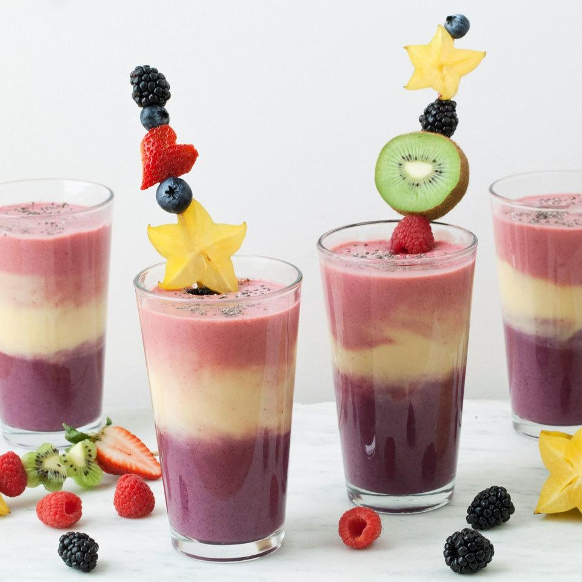

23 Important Benefits of Drinking Healthy Smoothies
Juicing and smoothies are all the rage right now. While both can boost your fruit and vegetable intake (something most Americans need to do) and are great for getting a variety of produce into your diet, one is the better choice. That's the smoothie. Why? Juicing leaves behind a pulp-which contains fiber and nutrients that you end up tossing away-and thus you lose most of the benefits of whole fruits and vegetables. Blending produce into a smoothie, however, preserves fiber-and a smoothie can deliver an extra boost of vitamins, minerals and phytochemicals because it often includes fruit skins and pith. If your smoothie includes yogurt or milk, you get some calcium too. Blending, however, introduces oxygen and sometimes heat, which will knock out a little vitamin C and some B vitamins. (No big deal really, as most of us get plenty of C and produce isn't a top source of the most sensitive B vitamins.) Add these 6 ingredients to your smoothie to make it super-healthy.
buy